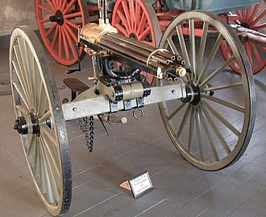

About
What He Is Great At

This is a video of someone using the gatling gun.
| Accomplishments | |
|---|---|
| Patented a rice planter in 1839. | Gatling studied medicine and became a doctor in 1850. |
| Invented the double-action hemp break in 1850. | Invented the steam plow in 1857. |
| Invented marine steam ram. | Invented the gatling gun. |
Sources
Wikipedia.comEncyclopedia.com